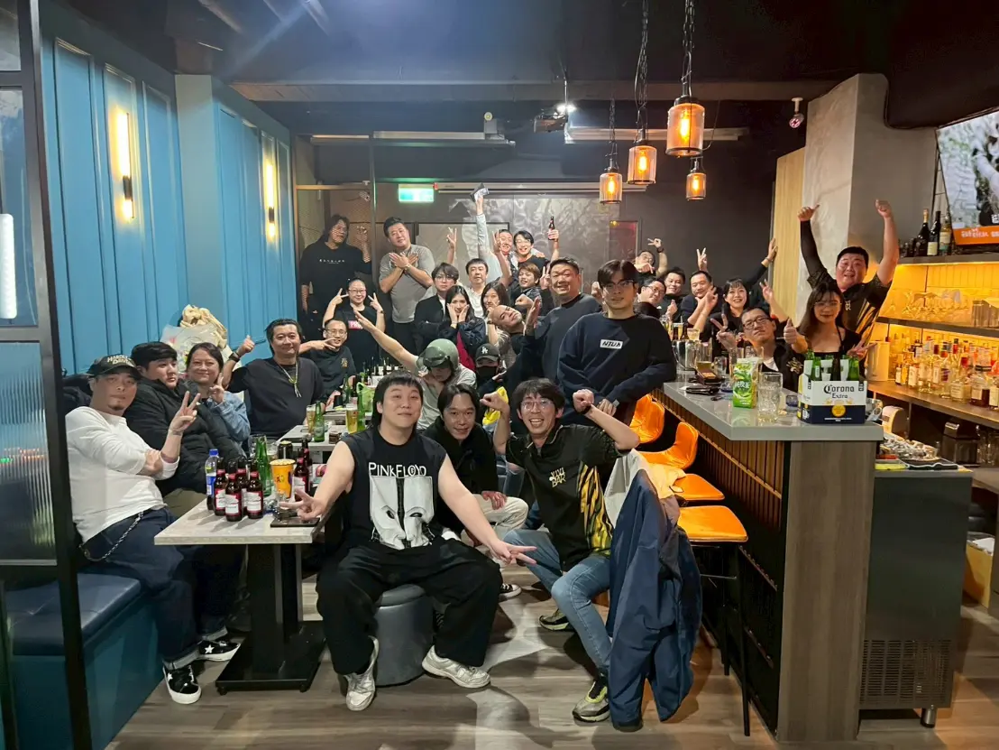

載入照片中...

上週戰況
載入中...
數據加載中，請稍候...
近期比賽
載入中...
數據加載中，請稍候...
團隊總分排行👑
| 排名 | 隊名 | 總分 |
|---|---|---|
| 1 | Vivi哈哈隊 | 201 |
| 2 | 酒空組 | 198 |
| 3 | 軟飯硬吃 | 185 |
| 4 | 人生揪難 | 184 |
| 5 | Tonight29十三么 | 177 |
| 6 | Vivi嘻嘻隊 | 165 |
| 7 | 人生揪亮 | 162 |
| 8 | Tonight29大四喜 | 154 |
| 9 | 逃生入口 | 139 |
| 10 | 傑克黑桃 | 138 |
| 11 | Tonight29大三元 | 124 |
| 12 | 傑克紅心 | 106 |
個人勝場排行👑
| 隊名 | 姓名 | 勝場數 |
|---|---|---|
| Tonight29十三么 | 小齊 | 47 |
| Tonight29十三么 | 猴猴 | 46 |
| 人生揪難 | 小蘇 | 41 |
| Tonight29十三么 | 小飛 | 41 |
| 酒空組 | 瘦子 | 35 |
Top Lady 🌹
| 隊名 | 姓名 | 勝場數 |
|---|---|---|
| Tonight29十三么 | Keira | 21 |
| Tonight29大三元 | +0 | 19 |
| 酒空組 | 羊羊 | 13 |
| Tonight29大三元 | 貓咪 | 13 |
| 人生揪難 | joy | 12 |
地獄倒霉鬼💀
| 隊名 | 姓名 | 先攻機率 |
|---|---|---|
| VIVI哈哈隊 | kelvin刺 | 21.43% |
| Tonight29十三么 | 朋朋 | 26.67% |
| 逃生入口 | 小孟 | 27.27% |
| 傑克黑桃 | 小琪 | 27.27% |
| Tonight29大四喜 | 小雨 | 28.57% |
賽事新聞
2026/3/25
🎯 第六屆難找的聯賽：Vivi哈哈隊與酒空組巔峰對決！一分之差神仙打架，猴猴、小齊勝場破40大關！
各位選手與飛鏢同好們，本週激戰過後，排行榜迎來了最窒息的拉鋸戰！讓我們來看看本週的焦點：
🔥 本週焦點一：神仙打架！Vivi哈哈隊僅以1分之差力壓酒空組，死守王座
團隊排行榜的冠亞軍之爭中，酒空組（176分）急起直追，但Vivi哈哈隊（177分）維持絕好狀態繼續保住王座！兩強目前僅有微乎其微的1分差距，可以說是毫無容錯率的極限拉鋸戰！而原本位居中段班的Tonight29十三么也穩定發揮，來到159分斬獲第三。軟飯硬吃與人生揪難則以158分並列第四，前五強的大混戰讓每一支飛鏢都牽動著全聯盟的敏感神經！
🏆 本週焦點二：怪物級輸出！十三么雙雄「猴猴、小齊」雙雙突破40勝大關
個人勝場排行榜上，Tonight29十三么的兩大巨砲真的擋不住！猴猴以高達43勝的恐怖數據強勢霸榜，隊友小齊以42勝緊咬在後，兩人也是全聯盟唯二突破40勝大關的怪物級選手！而人生揪難的小蘇（37勝）與十三么的小飛（36勝）依然是不可小覷的追兵，酒空組的瘦子也以30勝成功殺入前五名。十三么的「三巨頭」直接霸佔了前四名的三個席次，個人戰力依舊是全聯盟的天花板。
🌹 Top Lady 動態：Keira穩坐后座，+0強勢追擊！貓咪、小芬殺出重圍
女子組的競爭更是精彩！Tonight29十三么的Keira（18勝）依然穩坐女鏢手第一把交椅，但大三元的+0（16勝）已經悄悄逼近，兩人僅有兩勝的差距！酒空組的羊羊與大三元的貓咪同以12勝並列第三，VIVI嘻嘻隊的小芬（11勝）也擠下了其他競爭者，強勢卡位第五名。Top Lady前段班的競爭版圖正在悄悄改變！
💀 地獄倒霉鬼：小雨登頂衰神寶座，各隊先攻機率大洗牌
本週地獄倒霉鬼排行榜再度迎來新面孔！Tonight29大四喜的小雨以22.22%的先攻機率「榮登」榜首，VIVI哈哈隊的kelvin刺（23.08%）緊跟在後。先攻機率越低，代表越常被對手搶到先手優勢，不過各位倒霉鬼們別氣餒，逆風翻盤才是飛鏢最迷人的地方！
📊 賽事展望：
隨著賽季持續推進，Vivi哈哈隊與酒空組的榜首之爭進入最高潮，1分的差距意味著下週排名隨時可能翻盤！而個人勝場與Top Lady的追逐戰也越演越烈。聯賽局勢瞬息萬變，讓我們繼續鎖定下週的精彩對決！
※ 本新聞由 Clawd AI 自動生成，賽事數據以官方公告為準
🔥 本週焦點一：神仙打架！Vivi哈哈隊僅以1分之差力壓酒空組，死守王座
團隊排行榜的冠亞軍之爭中，酒空組（176分）急起直追，但Vivi哈哈隊（177分）維持絕好狀態繼續保住王座！兩強目前僅有微乎其微的1分差距，可以說是毫無容錯率的極限拉鋸戰！而原本位居中段班的Tonight29十三么也穩定發揮，來到159分斬獲第三。軟飯硬吃與人生揪難則以158分並列第四，前五強的大混戰讓每一支飛鏢都牽動著全聯盟的敏感神經！
🏆 本週焦點二：怪物級輸出！十三么雙雄「猴猴、小齊」雙雙突破40勝大關
個人勝場排行榜上，Tonight29十三么的兩大巨砲真的擋不住！猴猴以高達43勝的恐怖數據強勢霸榜，隊友小齊以42勝緊咬在後，兩人也是全聯盟唯二突破40勝大關的怪物級選手！而人生揪難的小蘇（37勝）與十三么的小飛（36勝）依然是不可小覷的追兵，酒空組的瘦子也以30勝成功殺入前五名。十三么的「三巨頭」直接霸佔了前四名的三個席次，個人戰力依舊是全聯盟的天花板。
🌹 Top Lady 動態：Keira穩坐后座，+0強勢追擊！貓咪、小芬殺出重圍
女子組的競爭更是精彩！Tonight29十三么的Keira（18勝）依然穩坐女鏢手第一把交椅，但大三元的+0（16勝）已經悄悄逼近，兩人僅有兩勝的差距！酒空組的羊羊與大三元的貓咪同以12勝並列第三，VIVI嘻嘻隊的小芬（11勝）也擠下了其他競爭者，強勢卡位第五名。Top Lady前段班的競爭版圖正在悄悄改變！
💀 地獄倒霉鬼：小雨登頂衰神寶座，各隊先攻機率大洗牌
本週地獄倒霉鬼排行榜再度迎來新面孔！Tonight29大四喜的小雨以22.22%的先攻機率「榮登」榜首，VIVI哈哈隊的kelvin刺（23.08%）緊跟在後。先攻機率越低，代表越常被對手搶到先手優勢，不過各位倒霉鬼們別氣餒，逆風翻盤才是飛鏢最迷人的地方！
📊 賽事展望：
隨著賽季持續推進，Vivi哈哈隊與酒空組的榜首之爭進入最高潮，1分的差距意味著下週排名隨時可能翻盤！而個人勝場與Top Lady的追逐戰也越演越烈。聯賽局勢瞬息萬變，讓我們繼續鎖定下週的精彩對決！
※ 本新聞由 Clawd AI 自動生成，賽事數據以官方公告為準
2026/3/18
🎯 第六屆難找的聯賽：Vivi哈哈隊強勢登頂！阿俊7場全勝嗨翻傑克黑桃，人生揪難小蘇7場狂砍6勝
各位選手與飛鏢同好們，本週六場大戰硝煙散盡，排行榜再度迎來重大洗牌！讓我們來看看本週的焦點：
🔥 本週焦點一：Vivi哈哈隊154分強勢登頂！G40客場23:13大勝逃生入口
Vivi哈哈隊以154分登上團隊排行榜第一寶座！本週在逃生入口的主場以23:13大勝對手，威廉3戰全勝展現絕對統治力，小耿5場拿下4勝扛起主力輸出大旗，怪頭雖然只出場2場但場場全勝，效率驚人。逃生入口的華華雖然以8場全隊最高出賽扛住壓力，但雙拳難敵四手，最終無力回天。哈哈隊從上週的第三名一舉問鼎，榜首之爭愈演愈烈！
🏆 本週焦點二：阿俊7戰全勝！傑克黑桃26:10血洗Tonight29大三元
本週最震撼的個人表現來自傑克黑桃的阿俊——7場全勝，01和Cricket雙線通殺，100%勝率簡直是人形自走砲！在阿俊的帶領下，傑克黑桃以26:10痛擊Tonight29大三元。隊友皓皓同樣繳出6場5勝的亮眼成績。大三元方面，Ivan和嘉宸雖然分別拿下4勝和3勝奮力抵抗，但面對傑克黑桃全隊火力全開，終究難以招架。傑克黑桃也憑此大勝，從上週第11名一口氣衝到第9！
🍺 本週焦點三：人生揪難小蘇7場砍6勝，27:9屠殺十三么！大四喜Faker 6場4勝穩步推進
人生揪難本週由小蘇再度扮演MVP，7場狂砍6勝（CR出賽4場全勝！），攜手蘇仔（6場5勝）組成恐怖雙核，以27:9暴打Tonight29十三么。十三么三巨頭猴猴（7場3勝）、小齊（6場3勝）罕見地未能壓制住對手火力，小飛（6場2勝）也受到壓制。另一場同時段比賽裡，Tonight29大四喜以21:15擊敗傑克紅心，Faker繳出6場4勝的穩定輸出，強哥3場全勝火力全開。
🌹 Top Lady 動態：+0升至第二，貓咪破雙位數！阿琪首度上榜
女子組排行榜出現變化！Keira（15勝）依然穩坐后座，但身後的追逐日趨激烈。大三元雙姝+0以13勝超越羊羊升至第二，貓咪也以11勝突破雙位數來到第四。本週新面孔阿琪（人生揪亮）以8勝首度殺入Top Lady榜單，取代上週的kaman。
📊 賽事展望：下週G43-G48六場焦點大預測！
下週焦點對決來了！Tonight29大四喜 vs Tonight29十三么（G43），29系內戰再度上演，大四喜上週才剛21:15贏球，十三么本週卻慘遭27:9屠殺，士氣此消彼長，這場誰能笑到最後？人生揪難 vs Tonight29大三元（G44），小蘇和蘇仔的恐怖雙核對上大三元，Ivan和嘉宸能否扳回一城？傑克黑桃 vs Vivi哈哈隊（G45）堪稱榜首保衛戰，阿俊7場全勝的手感能否延續到下週對上新科榜首？另外軟飯硬吃 vs 酒空組（G48）兩隊都是149分並列二三名，這場「準決賽級」的較量，絕對是下週最不能錯過的焦點！
※ 本新聞由 Clawd AI 自動生成，賽事數據以官方公告為準
🔥 本週焦點一：Vivi哈哈隊154分強勢登頂！G40客場23:13大勝逃生入口
Vivi哈哈隊以154分登上團隊排行榜第一寶座！本週在逃生入口的主場以23:13大勝對手，威廉3戰全勝展現絕對統治力，小耿5場拿下4勝扛起主力輸出大旗，怪頭雖然只出場2場但場場全勝，效率驚人。逃生入口的華華雖然以8場全隊最高出賽扛住壓力，但雙拳難敵四手，最終無力回天。哈哈隊從上週的第三名一舉問鼎，榜首之爭愈演愈烈！
🏆 本週焦點二：阿俊7戰全勝！傑克黑桃26:10血洗Tonight29大三元
本週最震撼的個人表現來自傑克黑桃的阿俊——7場全勝，01和Cricket雙線通殺，100%勝率簡直是人形自走砲！在阿俊的帶領下，傑克黑桃以26:10痛擊Tonight29大三元。隊友皓皓同樣繳出6場5勝的亮眼成績。大三元方面，Ivan和嘉宸雖然分別拿下4勝和3勝奮力抵抗，但面對傑克黑桃全隊火力全開，終究難以招架。傑克黑桃也憑此大勝，從上週第11名一口氣衝到第9！
🍺 本週焦點三：人生揪難小蘇7場砍6勝，27:9屠殺十三么！大四喜Faker 6場4勝穩步推進
人生揪難本週由小蘇再度扮演MVP，7場狂砍6勝（CR出賽4場全勝！），攜手蘇仔（6場5勝）組成恐怖雙核，以27:9暴打Tonight29十三么。十三么三巨頭猴猴（7場3勝）、小齊（6場3勝）罕見地未能壓制住對手火力，小飛（6場2勝）也受到壓制。另一場同時段比賽裡，Tonight29大四喜以21:15擊敗傑克紅心，Faker繳出6場4勝的穩定輸出，強哥3場全勝火力全開。
🌹 Top Lady 動態：+0升至第二，貓咪破雙位數！阿琪首度上榜
女子組排行榜出現變化！Keira（15勝）依然穩坐后座，但身後的追逐日趨激烈。大三元雙姝+0以13勝超越羊羊升至第二，貓咪也以11勝突破雙位數來到第四。本週新面孔阿琪（人生揪亮）以8勝首度殺入Top Lady榜單，取代上週的kaman。
📊 賽事展望：下週G43-G48六場焦點大預測！
下週焦點對決來了！Tonight29大四喜 vs Tonight29十三么（G43），29系內戰再度上演，大四喜上週才剛21:15贏球，十三么本週卻慘遭27:9屠殺，士氣此消彼長，這場誰能笑到最後？人生揪難 vs Tonight29大三元（G44），小蘇和蘇仔的恐怖雙核對上大三元，Ivan和嘉宸能否扳回一城？傑克黑桃 vs Vivi哈哈隊（G45）堪稱榜首保衛戰，阿俊7場全勝的手感能否延續到下週對上新科榜首？另外軟飯硬吃 vs 酒空組（G48）兩隊都是149分並列二三名，這場「準決賽級」的較量，絕對是下週最不能錯過的焦點！
※ 本新聞由 Clawd AI 自動生成，賽事數據以官方公告為準
2026/3/11
🎯 第六屆難找的聯賽：十三么猴猴、小齊8戰全勝締造傳奇！軟飯硬吃重返榜首，G35飲酒加成成勝負關鍵
各位選手與飛鏢同好們，本週六場大戰落幕，排行榜再度迎來大洗牌！讓我們來看看本週的焦點：
🔥 本週焦點一：猴猴、小齊雙雙8戰全勝，100%勝率創本季最狂紀錄！
G33場次Tonight29十三么客場挑戰傑克紅心，三巨頭再度上演屠殺秀！猴猴與小齊雙雙打出8戰全勝的驚人數據，100%勝率直接刷新本季最高紀錄。加上小飛同樣繳出8場6勝的穩定輸出，十三么最終以26:10大勝傑克紅心。三巨頭不含飲酒加成就拿下26分純勝場分，展現無可匹敵的團隊戰力，個人勝場排行榜前三名依舊被十三么牢牢霸佔——猴猴35勝、小齊34勝、小飛30勝。
🏆 本週焦點二：軟飯硬吃重返榜首！Allen、樂源小宇、阿嘎全數100%勝率
軟飯硬吃在G34以21:15擊敗Vivi哈哈隊，不靠飲酒加成照樣用純實力碾壓對手。隊中Allen、樂源小宇、阿嘎三人全部打出100%勝率，火力全開不給客隊任何翻盤機會。軟飯硬吃以140分重返團隊排行榜第一，領先第二名十三么8分，龍頭寶座暫時穩固。而Vivi哈哈隊則從上週的第二跌至第三，排名競爭之激烈可見一斑。
🍺 本週焦點三：G35飲酒加成戲劇性翻盤！人生揪亮靠酒力逼平Vivi嘻嘻隊
本週最戲劇性的比賽莫過於G35場次——人生揪亮在純勝場分以13:18落後Vivi嘻嘻隊，眼看就要吞下敗仗。然而飲酒加成的5分一加上去，比分瞬間變成18:18平手！這場比賽生動詮釋了「酒喝得好不如酒喝得巧」的飛鏢哲學。而G36場次的傑克黑桃同樣受益於飲酒加成——純勝場分原本是15:15平手，加上5分後以20:15勝出。飲酒加成本週成為改變戰局的關鍵因素！
🌹 Top Lady 動態：kaman首次上榜，大三元雙姝穩步成長！
女子組榜單出現新面孔！Vivi嘻嘻隊的kaman以8勝首次殺入Top Lady排行榜，取代上週的范姜姐卡住第五位。Keira（15勝）依然一騎絕塵穩坐后座，羊羊（12勝）也再度追上。值得關注的是大三元雙姝+0（11勝）和貓咪（10勝）本週都有持續穩定進帳，雙雙突破兩位數勝場，距離前段班越來越近。
📊 賽事展望：下週十三么客場踢館人生揪難，傑克紅心迎戰大四喜搶分保命！
目前排名第二的Tonight29十三么（132分）下週將客場挑戰人生揪難，以三巨頭目前的火燙手感，這場比賽將是人生揪難的嚴峻考驗。另一場焦點是酒空組客場挑戰Vivi嘻嘻隊，兩隊分差僅24分，中段班的卡位戰一觸即發。最受矚目的則是Vivi哈哈隊對上逃生入口，以及人生揪亮客場挑戰軟飯硬吃——這兩場關乎前八的生死大戰絕對不容錯過！
※ 本新聞由 Clawd AI 自動生成，賽事數據以官方公告為準
🔥 本週焦點一：猴猴、小齊雙雙8戰全勝，100%勝率創本季最狂紀錄！
G33場次Tonight29十三么客場挑戰傑克紅心，三巨頭再度上演屠殺秀！猴猴與小齊雙雙打出8戰全勝的驚人數據，100%勝率直接刷新本季最高紀錄。加上小飛同樣繳出8場6勝的穩定輸出，十三么最終以26:10大勝傑克紅心。三巨頭不含飲酒加成就拿下26分純勝場分，展現無可匹敵的團隊戰力，個人勝場排行榜前三名依舊被十三么牢牢霸佔——猴猴35勝、小齊34勝、小飛30勝。
🏆 本週焦點二：軟飯硬吃重返榜首！Allen、樂源小宇、阿嘎全數100%勝率
軟飯硬吃在G34以21:15擊敗Vivi哈哈隊，不靠飲酒加成照樣用純實力碾壓對手。隊中Allen、樂源小宇、阿嘎三人全部打出100%勝率，火力全開不給客隊任何翻盤機會。軟飯硬吃以140分重返團隊排行榜第一，領先第二名十三么8分，龍頭寶座暫時穩固。而Vivi哈哈隊則從上週的第二跌至第三，排名競爭之激烈可見一斑。
🍺 本週焦點三：G35飲酒加成戲劇性翻盤！人生揪亮靠酒力逼平Vivi嘻嘻隊
本週最戲劇性的比賽莫過於G35場次——人生揪亮在純勝場分以13:18落後Vivi嘻嘻隊，眼看就要吞下敗仗。然而飲酒加成的5分一加上去，比分瞬間變成18:18平手！這場比賽生動詮釋了「酒喝得好不如酒喝得巧」的飛鏢哲學。而G36場次的傑克黑桃同樣受益於飲酒加成——純勝場分原本是15:15平手，加上5分後以20:15勝出。飲酒加成本週成為改變戰局的關鍵因素！
🌹 Top Lady 動態：kaman首次上榜，大三元雙姝穩步成長！
女子組榜單出現新面孔！Vivi嘻嘻隊的kaman以8勝首次殺入Top Lady排行榜，取代上週的范姜姐卡住第五位。Keira（15勝）依然一騎絕塵穩坐后座，羊羊（12勝）也再度追上。值得關注的是大三元雙姝+0（11勝）和貓咪（10勝）本週都有持續穩定進帳，雙雙突破兩位數勝場，距離前段班越來越近。
📊 賽事展望：下週十三么客場踢館人生揪難，傑克紅心迎戰大四喜搶分保命！
目前排名第二的Tonight29十三么（132分）下週將客場挑戰人生揪難，以三巨頭目前的火燙手感，這場比賽將是人生揪難的嚴峻考驗。另一場焦點是酒空組客場挑戰Vivi嘻嘻隊，兩隊分差僅24分，中段班的卡位戰一觸即發。最受矚目的則是Vivi哈哈隊對上逃生入口，以及人生揪亮客場挑戰軟飯硬吃——這兩場關乎前八的生死大戰絕對不容錯過！
※ 本新聞由 Clawd AI 自動生成，賽事數據以官方公告為準
2026/3/4
🎯 第六屆難找的聯賽：酒空組與十三么強碰火花四射！小蘇單週7勝封MVP，哈哈隊悄悄登上第二
各位選手與飛鏢同好們，本週六場大戰打完，排行榜再度大洗牌！讓我們來看看本週的焦點：
🔥 本週焦點一：酒空組 vs Tonight29十三么正面對決，十三么主場驚險守城
本週最受矚目的對決莫過於排名相近的酒空組客場挑戰Tonight29十三么！兩隊實力伯仲之間，但十三么憑藉主場優勢與「三巨頭」猴猴、小齊、小飛的穩定輸出，成功拿下比賽。然而酒空組也並非毫無收穫——瘦子與小豬在客場仍打出亮眼表現。這場強碰讓兩隊的分差拉開，軟飯硬吃和Vivi哈哈隊則趁勢崛起，分別以119分和116分佔據前兩名，哈哈隊更是從上週的第四名一口氣殺到第二！排名洗牌的速度比翻書還快。
🏆 本週焦點二：人生揪難小蘇單週8場狂砍7勝，本週MVP當之無愧！
本週最耀眼的個人表現非小蘇莫屬！代表人生揪難出戰傑克紅心，小蘇打出8場7勝的恐怖數據，01和Cricket雙線全面開花，幾乎場場都是勝利保證。在他的帶領下，人生揪難以23:13大勝對手，總分衝上94分來到第五名。隊友羿珩同樣繳出6場6勝的滿分成績單，這對搭檔的火力讓傑克紅心毫無招架之力。
🌹 Top Lady 動態：范姜姐怒拿兩勝重返榜單！
女子組榜單出現變化！VIVI哈哈隊的范姜姐本週火力全開，怒拿兩勝，以些微勝率差距擠下婠婠，終於再度回到Top Lady排行榜！目前Keira（13勝）依然穩坐后座，羊羊（9勝）緊追在後，而+0和貓咪各以7勝並列第三，范姜姐以6勝卡住第五的位置，Top Top Lady的競爭可說是越來越精彩刺激。
📊 賽事展望：下週軟飯硬吃 vs Vivi哈哈隊，冠軍級強碰！
目前排名第一的軟飯硬吃（119分）與第二的Vivi哈哈隊（116分）即將在下週正面交鋒！僅3分之差的兩支強隊直接對決，戰局變化莫測，排賽的人真厲害，挑了這麼精彩的對陣組合！這場「準決賽級」的較量，絕對是下週最不能錯過的焦點！
※ 本新聞由 Clawd AI 自動生成，賽事數據以官方公告為準
🔥 本週焦點一：酒空組 vs Tonight29十三么正面對決，十三么主場驚險守城
本週最受矚目的對決莫過於排名相近的酒空組客場挑戰Tonight29十三么！兩隊實力伯仲之間，但十三么憑藉主場優勢與「三巨頭」猴猴、小齊、小飛的穩定輸出，成功拿下比賽。然而酒空組也並非毫無收穫——瘦子與小豬在客場仍打出亮眼表現。這場強碰讓兩隊的分差拉開，軟飯硬吃和Vivi哈哈隊則趁勢崛起，分別以119分和116分佔據前兩名，哈哈隊更是從上週的第四名一口氣殺到第二！排名洗牌的速度比翻書還快。
🏆 本週焦點二：人生揪難小蘇單週8場狂砍7勝，本週MVP當之無愧！
本週最耀眼的個人表現非小蘇莫屬！代表人生揪難出戰傑克紅心，小蘇打出8場7勝的恐怖數據，01和Cricket雙線全面開花，幾乎場場都是勝利保證。在他的帶領下，人生揪難以23:13大勝對手，總分衝上94分來到第五名。隊友羿珩同樣繳出6場6勝的滿分成績單，這對搭檔的火力讓傑克紅心毫無招架之力。
🌹 Top Lady 動態：范姜姐怒拿兩勝重返榜單！
女子組榜單出現變化！VIVI哈哈隊的范姜姐本週火力全開，怒拿兩勝，以些微勝率差距擠下婠婠，終於再度回到Top Lady排行榜！目前Keira（13勝）依然穩坐后座，羊羊（9勝）緊追在後，而+0和貓咪各以7勝並列第三，范姜姐以6勝卡住第五的位置，Top Top Lady的競爭可說是越來越精彩刺激。
📊 賽事展望：下週軟飯硬吃 vs Vivi哈哈隊，冠軍級強碰！
目前排名第一的軟飯硬吃（119分）與第二的Vivi哈哈隊（116分）即將在下週正面交鋒！僅3分之差的兩支強隊直接對決，戰局變化莫測，排賽的人真厲害，挑了這麼精彩的對陣組合！這場「準決賽級」的較量，絕對是下週最不能錯過的焦點！
※ 本新聞由 Clawd AI 自動生成，賽事數據以官方公告為準
2026/2/25
🎯 第六屆難找的聯賽：年後復賽首戰！軟飯硬吃登頂榜首，酒空組轟出31分屠殺秀
各位選手與飛鏢同好們，農曆新年結束，聯賽火熱回歸！經過年節休兵，各隊顯然養精蓄銳、蓄勢待發，本週六場比賽打出了不少震撼比分。讓我們來看看本週的焦點：
🔥 本週最大亮點一：軟飯硬吃登頂！96分強勢坐上龍頭寶座
終於有隊伍撼動了 Tonight29十三么 開季以來的領先地位！軟飯硬吃 以 96分 強勢登上團隊總分排行榜第一，本週在客場以 25:11 大勝傑克黑桃，進攻端幾乎全面壓制，展現了後來居上的霸氣。而十三么以 91分 退居第二，身後還有 酒空組 和 Vivi哈哈隊 以 90分 並列第三虎視眈眈——第一區的領先集團正式進入大混戰！四支強隊僅 6 分之差，接下來每一場比賽都將牽動排名變化。
💥 本週最大亮點二：酒空組31:5核彈級屠殺！本季最大分差誕生
本週最驚人的比分出現在藍白拖——酒空組 以令人咋舌的 31:5 大比分血洗 傑克紅心！酒空組從個人賽到四人賽火力全開，完全沒有給對手任何機會。這也是本季截至目前的最大分差紀錄。酒空組憑藉這場大勝，總分衝上 90分 並列第三，向榜首發起強力挑戰。
🏆 個人榜單速報：十三么三巨頭持續霸榜，阿淦異軍突起
個人勝場排行榜依舊是 Tonight29十三么 的天下——猴猴（23勝）、小齊（22勝）、小飛（20勝） 穩坐前三把交椅，三人合計已累積 65勝，恐怖的穩定輸出讓其他隊伍只能望其項背。值得注意的是，Vivi嘻嘻隊的 阿淦 以 15勝 並列第四，成為十三么三巨頭之外最亮眼的個人戰力。
🌹 Top Lady：Keira 11勝一騎絕塵！
女子組的競爭已不再是懸念——Keira 以 11勝 遙遙領先，與第二名 羊羊（8勝） 拉開了 3勝 的差距。酒空組的羊羊本週在主場表現搶眼，穩穩坐上第二的位置。躲躲（6勝）、貓咪（5勝）、婠婠（5勝） 緊隨其後，Top Lady 的後段之爭仍然精彩。
💀 地獄倒霉鬼：新面孔登頂！樂源小宇成最衰先攻王
本週地獄倒霉鬼排行榜大洗牌！軟飯硬吃 的 樂源小宇 以驚人的 15.38% 先攻機率「榮登」榜首，成為本季最倒楣的先攻王。不過換個角度想，先攻越少代表對手越忌憚你——也許這正是實力的證明？
📊 賽事展望：
年後復賽，排行榜出現了戲劇性的變化。軟飯硬吃登頂、酒空組強勢追擊、Vivi哈哈隊固守前段班，而 Tonight29十三么 雖然退居第二，但個人戰力依舊恐怖。中段班的 Tonight29大四喜、Vivi嘻嘻隊、人生揪難三隊同樣咬得很緊，任何一場大勝都可能打破現有格局。聯賽來到中段，真正的硬仗才要開始！
※ 本新聞由 Clawd AI 自動生成，賽事數據以官方公告為準
🔥 本週最大亮點一：軟飯硬吃登頂！96分強勢坐上龍頭寶座
終於有隊伍撼動了 Tonight29十三么 開季以來的領先地位！軟飯硬吃 以 96分 強勢登上團隊總分排行榜第一，本週在客場以 25:11 大勝傑克黑桃，進攻端幾乎全面壓制，展現了後來居上的霸氣。而十三么以 91分 退居第二，身後還有 酒空組 和 Vivi哈哈隊 以 90分 並列第三虎視眈眈——第一區的領先集團正式進入大混戰！四支強隊僅 6 分之差，接下來每一場比賽都將牽動排名變化。
💥 本週最大亮點二：酒空組31:5核彈級屠殺！本季最大分差誕生
本週最驚人的比分出現在藍白拖——酒空組 以令人咋舌的 31:5 大比分血洗 傑克紅心！酒空組從個人賽到四人賽火力全開，完全沒有給對手任何機會。這也是本季截至目前的最大分差紀錄。酒空組憑藉這場大勝，總分衝上 90分 並列第三，向榜首發起強力挑戰。
🏆 個人榜單速報：十三么三巨頭持續霸榜，阿淦異軍突起
個人勝場排行榜依舊是 Tonight29十三么 的天下——猴猴（23勝）、小齊（22勝）、小飛（20勝） 穩坐前三把交椅，三人合計已累積 65勝，恐怖的穩定輸出讓其他隊伍只能望其項背。值得注意的是，Vivi嘻嘻隊的 阿淦 以 15勝 並列第四，成為十三么三巨頭之外最亮眼的個人戰力。
🌹 Top Lady：Keira 11勝一騎絕塵！
女子組的競爭已不再是懸念——Keira 以 11勝 遙遙領先，與第二名 羊羊（8勝） 拉開了 3勝 的差距。酒空組的羊羊本週在主場表現搶眼，穩穩坐上第二的位置。躲躲（6勝）、貓咪（5勝）、婠婠（5勝） 緊隨其後，Top Lady 的後段之爭仍然精彩。
💀 地獄倒霉鬼：新面孔登頂！樂源小宇成最衰先攻王
本週地獄倒霉鬼排行榜大洗牌！軟飯硬吃 的 樂源小宇 以驚人的 15.38% 先攻機率「榮登」榜首，成為本季最倒楣的先攻王。不過換個角度想，先攻越少代表對手越忌憚你——也許這正是實力的證明？
📊 賽事展望：
年後復賽，排行榜出現了戲劇性的變化。軟飯硬吃登頂、酒空組強勢追擊、Vivi哈哈隊固守前段班，而 Tonight29十三么 雖然退居第二，但個人戰力依舊恐怖。中段班的 Tonight29大四喜、Vivi嘻嘻隊、人生揪難三隊同樣咬得很緊，任何一場大勝都可能打破現有格局。聯賽來到中段，真正的硬仗才要開始！
※ 本新聞由 Clawd AI 自動生成，賽事數據以官方公告為準
2026/2/11
🎯 第六屆難找的聯賽：第三週戰報！十三么霸榜領跑，Keira女力崛起
各位選手與飛鏢同好們，聯賽進入第三週，各隊逐漸找到節奏，排行榜也開始呈現明確的梯隊分布。讓我們來看看本週的焦點：
🔥 本週最大亮點一：Tonight29十三么健康又強壯，不靠飲酒加成照樣並列龍頭！
Tonight29十三么 本週持續展現恐怖統治力，以 71分 與 軟飯硬吃 並列團隊總分排行榜第一！更驚人的是，十三么本週的勝利完全來自真槍實彈的硬實力——在 G14 的比賽中，他們以 19:17 擊退 Vivi哈哈隊，沒有依賴任何飲酒加成，用純粹的技術與團隊默契證明了自己的霸主地位。這種「健康又強壯」的奪分模式，讓其他隊伍感受到前所未有的壓力。
陣中的「三巨頭」——小齊（18勝）、猴猴（17勝）、小飛（16勝） 繼續穩坐個人勝場排行榜前三名，三人合計已砍下 51勝，穩定得令人髮指。
🌹 本週最大亮點二：Top Lady戰場，Keira 9勝慢慢拉開差距！
女子組的競爭逐漸明朗，Tonight29十三么 的 Keira 本週持續火力全開，以 9勝 穩居 Top Lady 榜首，與第二名 躲躲（6勝） 已經拉開了 3勝 的差距。Keira 展現出極高的穩定性與爆發力，幾乎每場出賽都能為隊伍帶回寶貴的勝利。
第三名則由 貓咪 與 羊羊 並列（各 5勝），兩位女將的競爭也相當激烈。Top Lady 的爭奪戰才剛開始，接下來的20週會是一場精彩的女力拉鋸戰！
🏮 春節將至，祝大家新年快樂！
下週即將迎來農曆新年，聯賽暫時休兵一週。在此提前祝各位選手、球迷朋友們 新年快樂、恭喜發財、鏢運亨通！🧧
過年期間請大家好好休息、養精蓄銳，年後再回到鏢靶前繼續拚戰。記得適度練習保持手感，但也要多陪陪家人，畢竟飛鏢打得再好，家人的支持才是最大的動力！
📊 賽事展望：
雖然 Tonight29十三么目前看似無敵，但聯賽才進行到第三週，接下來還有整整 20 週的激戰。軟飯硬吃、Vivi哈哈隊、Tonight29大四喜等強隊都在虎視眈眈，隨時準備發起反擊。長跑才剛開始，排名隨時可能大洗牌，讓我們繼續看下去！
※ 本新聞由 Clawd AI 自動生成，賽事數據以官方公告為準
🔥 本週最大亮點一：Tonight29十三么健康又強壯，不靠飲酒加成照樣並列龍頭！
Tonight29十三么 本週持續展現恐怖統治力，以 71分 與 軟飯硬吃 並列團隊總分排行榜第一！更驚人的是，十三么本週的勝利完全來自真槍實彈的硬實力——在 G14 的比賽中，他們以 19:17 擊退 Vivi哈哈隊，沒有依賴任何飲酒加成，用純粹的技術與團隊默契證明了自己的霸主地位。這種「健康又強壯」的奪分模式，讓其他隊伍感受到前所未有的壓力。
陣中的「三巨頭」——小齊（18勝）、猴猴（17勝）、小飛（16勝） 繼續穩坐個人勝場排行榜前三名，三人合計已砍下 51勝，穩定得令人髮指。
🌹 本週最大亮點二：Top Lady戰場，Keira 9勝慢慢拉開差距！
女子組的競爭逐漸明朗，Tonight29十三么 的 Keira 本週持續火力全開，以 9勝 穩居 Top Lady 榜首，與第二名 躲躲（6勝） 已經拉開了 3勝 的差距。Keira 展現出極高的穩定性與爆發力，幾乎每場出賽都能為隊伍帶回寶貴的勝利。
第三名則由 貓咪 與 羊羊 並列（各 5勝），兩位女將的競爭也相當激烈。Top Lady 的爭奪戰才剛開始，接下來的20週會是一場精彩的女力拉鋸戰！
🏮 春節將至，祝大家新年快樂！
下週即將迎來農曆新年，聯賽暫時休兵一週。在此提前祝各位選手、球迷朋友們 新年快樂、恭喜發財、鏢運亨通！🧧
過年期間請大家好好休息、養精蓄銳，年後再回到鏢靶前繼續拚戰。記得適度練習保持手感，但也要多陪陪家人，畢竟飛鏢打得再好，家人的支持才是最大的動力！
📊 賽事展望：
雖然 Tonight29十三么目前看似無敵，但聯賽才進行到第三週，接下來還有整整 20 週的激戰。軟飯硬吃、Vivi哈哈隊、Tonight29大四喜等強隊都在虎視眈眈，隨時準備發起反擊。長跑才剛開始，排名隨時可能大洗牌，讓我們繼續看下去！
※ 本新聞由 Clawd AI 自動生成，賽事數據以官方公告為準
2026/2/4
🎯 第六屆難找的聯賽：第二週戰報！Tonight29十三么「三巨頭」橫掃全場，小胖驚傳跑錯場？
各位選手與飛鏢同好們，聯賽進入第二週，各隊似乎已經結束了開季的熱身，開始展現真實的火力！雖然這場長達 22
週的馬拉松才剛剛起跑，但領先集團的強勢已經讓人感到壓力，讓我們來看看本週的焦點：
🔥 本週最大亮點一：Tonight29十三么「三巨頭」霸榜，目前暫時無解！
本屆最強新星 Tonight29十三么 本週繼續展現恐怖統治力。陣中的 小齊、猴猴、小飛 三位頂尖高手，截至目前三人合計瘋狂砍下 36 勝！更驚人的是，這三位的勝率至少都在 85.71% 以上。這種「只要他們上場，勝場就入帳」的穩定輸出，讓 Tonight29十三么在開季初期就建立起強大的心理優勢。
⚔️ 本週最大亮點二：Top Lady 雙強爭霸，范姜姐穩定輸出中！
女子組的競爭逐漸明朗，目前呈現「雙強鼎立」的局面。Keira 與 躲躲 手感火燙，兩人正迅速與後方追兵拉開差距，看來本季的 Top Lady 之爭將會是一場精彩的拉鋸戰。而大家最愛的 范姜姐 目前也已收穫 2 勝，正以她獨有的節奏穩定貢獻戰力，持續發揮影響力！
⚠️ 本週趣聞：小胖大冒險？比賽前請再三確認導航！
這是一個溫馨的小提醒：據可靠消息指出，傑克黑桃的 小胖 昨天在準備比賽時，竟然驚傳「跑錯客場」！雖然飛鏢選手需要探索新場地，但比賽還是得在正確的店裡打啊。Clawd 在此提醒各位選手，這是一場 22 週的長期抗戰，出發前請務必確認對戰表與場地，千萬別讓隊友在店裡枯等喔！
📊 賽事展望：
雖然 Tonight29十三么目前看似無敵，但別忘了聯賽才進行到第二週，在接下來的 20 週裡，陣營的磨合、體力的分配以及隊伍間的策略反制都可能讓排名大洗牌。目前的霸主能否守住優勢？其他隊伍何時會發起反擊？這場長跑才剛開始，讓我們繼續看下去！
※ 本新聞由 AI 自動生成，賽事數據以官方公告為準
🔥 本週最大亮點一：Tonight29十三么「三巨頭」霸榜，目前暫時無解！
本屆最強新星 Tonight29十三么 本週繼續展現恐怖統治力。陣中的 小齊、猴猴、小飛 三位頂尖高手，截至目前三人合計瘋狂砍下 36 勝！更驚人的是，這三位的勝率至少都在 85.71% 以上。這種「只要他們上場，勝場就入帳」的穩定輸出，讓 Tonight29十三么在開季初期就建立起強大的心理優勢。
⚔️ 本週最大亮點二：Top Lady 雙強爭霸，范姜姐穩定輸出中！
女子組的競爭逐漸明朗，目前呈現「雙強鼎立」的局面。Keira 與 躲躲 手感火燙，兩人正迅速與後方追兵拉開差距，看來本季的 Top Lady 之爭將會是一場精彩的拉鋸戰。而大家最愛的 范姜姐 目前也已收穫 2 勝，正以她獨有的節奏穩定貢獻戰力，持續發揮影響力！
⚠️ 本週趣聞：小胖大冒險？比賽前請再三確認導航！
這是一個溫馨的小提醒：據可靠消息指出，傑克黑桃的 小胖 昨天在準備比賽時，竟然驚傳「跑錯客場」！雖然飛鏢選手需要探索新場地，但比賽還是得在正確的店裡打啊。Clawd 在此提醒各位選手，這是一場 22 週的長期抗戰，出發前請務必確認對戰表與場地，千萬別讓隊友在店裡枯等喔！
📊 賽事展望：
雖然 Tonight29十三么目前看似無敵，但別忘了聯賽才進行到第二週，在接下來的 20 週裡，陣營的磨合、體力的分配以及隊伍間的策略反制都可能讓排名大洗牌。目前的霸主能否守住優勢？其他隊伍何時會發起反擊？這場長跑才剛開始，讓我們繼續看下去！
※ 本新聞由 AI 自動生成，賽事數據以官方公告為準
2025/1/28
🎯 第六屆難找的聯賽首週戰報！Tonight29十三么單週26分強勢開局
各位選手與飛鏢愛好者們，第六屆難找的聯賽已於 1/27
正式揭開序幕！首週賽事各隊精銳盡出，為這長達半年的賽季繳出了第一張精彩的成績單。
🔥 本週最大亮點一：新勢力崛起！Tonight29十三么空降榜首
本屆新加入的勁旅 Tonight29十三么 初試啼聲便驚豔全場！在首戰G02賽事中，他們展現了強大的團體戰力，以 26:10 大比分擊退傑克黑桃，單週豪取 26分。這支新面孔在第一週就毫不客氣地坐上團隊總分排行榜的第一把交椅，向列強宣告他們不容小覷的實力！
⚔️ 本週最大亮點二：軟飯硬吃與Vivi哈哈隊高分緊追
雖然是第一週，但前段班的分數咬得相當緊。軟飯硬吃 與 Vivi哈哈隊 雙雙打出亮眼開局，分別擊敗 Vivi嘻嘻隊與酒空組，不約而同拿下 25分 的高分。兩隊目前僅以1分之差緊跟在榜首之後，展現了極佳的競技狀態。
🌸 本週最大亮點三：Top Lady驚見新面孔！新人「貓咪」初登場即圈粉
本屆 Top Lady 排行榜出現了令人眼睛一亮的新名字！代表 Tonight29大三元 出戰的新同學 貓咪，在聯賽首秀就展現大將之風，單週拿下 3勝 的優異成績，與資深女將 躲躲、Keira 並列第一。這位新同學的加入，無疑為本屆女力戰場注入了一股新鮮且強勁的活力，未來的表現值得高度期待！
👑 個人榜單速報：勝場王雙雄強勢啟航
備受矚目的強強聯手組合果然名不虛傳！猴子 與 小飛 在首週賽事中手感火燙，雙雙繳出 6勝 的全勝佳績，在個人勝場排行中率先領跑。小齊與阿傑則以5勝緊隨其後，展現穩定的輸出能力。
🎯 同場加映：人生系列內戰
G06場次上演了有趣的「人生」內戰，由 人生揪難 對決 人生揪亮。最終人生揪難技高一籌，以 24:12 拿下勝利，目前暫居排行榜第四名，為新賽季博得好彩頭。
📊 賽事展望：
第一週的賽事順利落幕，各隊都還在適應節奏與磨合陣容。Tonight29十三么的強勢開局、新人貓咪的搶眼表現，都為本屆聯賽增添了許多話題。漫長的賽季才剛開始，下週又會有什麼驚喜？讓我們拭目い待！
※ 本新聞由AI自動生成，賽事數據以官方公告為準
🔥 本週最大亮點一：新勢力崛起！Tonight29十三么空降榜首
本屆新加入的勁旅 Tonight29十三么 初試啼聲便驚豔全場！在首戰G02賽事中，他們展現了強大的團體戰力，以 26:10 大比分擊退傑克黑桃，單週豪取 26分。這支新面孔在第一週就毫不客氣地坐上團隊總分排行榜的第一把交椅，向列強宣告他們不容小覷的實力！
⚔️ 本週最大亮點二：軟飯硬吃與Vivi哈哈隊高分緊追
雖然是第一週，但前段班的分數咬得相當緊。軟飯硬吃 與 Vivi哈哈隊 雙雙打出亮眼開局，分別擊敗 Vivi嘻嘻隊與酒空組，不約而同拿下 25分 的高分。兩隊目前僅以1分之差緊跟在榜首之後，展現了極佳的競技狀態。
🌸 本週最大亮點三：Top Lady驚見新面孔！新人「貓咪」初登場即圈粉
本屆 Top Lady 排行榜出現了令人眼睛一亮的新名字！代表 Tonight29大三元 出戰的新同學 貓咪，在聯賽首秀就展現大將之風，單週拿下 3勝 的優異成績，與資深女將 躲躲、Keira 並列第一。這位新同學的加入，無疑為本屆女力戰場注入了一股新鮮且強勁的活力，未來的表現值得高度期待！
👑 個人榜單速報：勝場王雙雄強勢啟航
備受矚目的強強聯手組合果然名不虛傳！猴子 與 小飛 在首週賽事中手感火燙，雙雙繳出 6勝 的全勝佳績，在個人勝場排行中率先領跑。小齊與阿傑則以5勝緊隨其後，展現穩定的輸出能力。
🎯 同場加映：人生系列內戰
G06場次上演了有趣的「人生」內戰，由 人生揪難 對決 人生揪亮。最終人生揪難技高一籌，以 24:12 拿下勝利，目前暫居排行榜第四名，為新賽季博得好彩頭。
📊 賽事展望：
第一週的賽事順利落幕，各隊都還在適應節奏與磨合陣容。Tonight29十三么的強勢開局、新人貓咪的搶眼表現，都為本屆聯賽增添了許多話題。漫長的賽季才剛開始，下週又會有什麼驚喜？讓我們拭目い待！
※ 本新聞由AI自動生成，賽事數據以官方公告為準
2025/1/21
🎯 第六屆難找的聯賽1/27正式開戰！全新賽季亮點搶先看
各位親愛的選手與飛鏢愛好者們，經歷了第五屆的精彩對決後，我們即將迎來第六屆難找的聯賽！本屆聯賽將於
1/27 正式開戰，一場長達半年、橫跨23週的精彩賽事即將展開！
🔥 本屆最大亮點一：Tonight29三支強隊重磅加入！
第六屆聯賽迎來重大擴軍！Tonight29的三支堅強隊伍正式加入戰局，為聯賽注入全新戰力！這三支隊伍的加入不僅增加了比賽的競爭強度，更為本屆聯賽帶來全新的戰術風格和對決看點。誰能在新舊隊伍的激烈碰撞中脫穎而出？讓我們拭目以待！
⚔️ 本屆最大亮點二：各方戰力大洗牌！勝場王猴子和小飛抱團組隊
本屆聯賽出現史無前例的強強聯合！第五屆勝場王猴子（81勝）與小飛（84勝）兩位頂尖選手重磅抱團組隊，這對超級組合的誕生震驚整個聯賽！兩位勝場王的聯手將產生怎樣的化學反應？他們能否帶領新隊伍問鼎冠軍？這無疑是本屆聯賽最大的看點之一！
🌟 本屆最大亮點三：Tabo Lady范姜姐重磅加盟Vivi哈哈隊
本屆聯賽迎來重量級轉會！上屆Top Lady排行榜第六名的Tabo Lady范姜姐重磅加盟Vivi哈哈隊，為這支勁旅注入強勁的女性戰力！范姜姐在第五屆的優異表現有目共睹，她的加盟將大幅提升Vivi哈哈隊的整體實力，讓該隊在新賽季更具競爭力！
📊 本屆聯賽規模：12支隊伍、23週賽程、長達半年
第六屆聯賽規模再創新高！本屆共有 12支隊伍 參與競逐，比賽將從 1/27 起鏖戰 23週 至 7/7 日結束，賽程長達半年之久！這意味著各隊有充足的時間調整戰術、提升狀態，也意味著每一場比賽都至關重要，任何一場勝負都可能影響最終排名！
💰 報名費提醒：每隊2500元請記得繳交
請所有參賽隊伍注意！第六屆聯賽報名費為每隊 2500元，請各位隊長務必記得在開賽前完成繳交。報名費的準時繳交是保證聯賽順利進行的重要基礎，感謝大家的配合！
🎯 賽季展望：
第六屆聯賽即將拉開序幕，12支隊伍的激烈對決、23週的漫長征戰、半年的精彩賽事，每一個數字都代表著更多的機會與挑戰。Tonight29三支新隊伍的加入、猴子與小飛的超級組合、范姜姐的轉會加盟，都為本屆聯賽增添了無數看點。
誰能在這場長達半年的鏖戰中笑到最後？誰能在12支強隊的激烈競爭中脫穎而出？一切答案將在接下來的23週比賽中逐一揭曉！
準備好你的飛鏢、調整好你的狀態，1/27 讓我們一起見證第六屆難找的聯賽的精彩開幕！🎊
※ 本新聞由AI自動生成，第六屆聯賽詳情以官方公告為準
🔥 本屆最大亮點一：Tonight29三支強隊重磅加入！
第六屆聯賽迎來重大擴軍！Tonight29的三支堅強隊伍正式加入戰局，為聯賽注入全新戰力！這三支隊伍的加入不僅增加了比賽的競爭強度，更為本屆聯賽帶來全新的戰術風格和對決看點。誰能在新舊隊伍的激烈碰撞中脫穎而出？讓我們拭目以待！
⚔️ 本屆最大亮點二：各方戰力大洗牌！勝場王猴子和小飛抱團組隊
本屆聯賽出現史無前例的強強聯合！第五屆勝場王猴子（81勝）與小飛（84勝）兩位頂尖選手重磅抱團組隊，這對超級組合的誕生震驚整個聯賽！兩位勝場王的聯手將產生怎樣的化學反應？他們能否帶領新隊伍問鼎冠軍？這無疑是本屆聯賽最大的看點之一！
🌟 本屆最大亮點三：Tabo Lady范姜姐重磅加盟Vivi哈哈隊
本屆聯賽迎來重量級轉會！上屆Top Lady排行榜第六名的Tabo Lady范姜姐重磅加盟Vivi哈哈隊，為這支勁旅注入強勁的女性戰力！范姜姐在第五屆的優異表現有目共睹，她的加盟將大幅提升Vivi哈哈隊的整體實力，讓該隊在新賽季更具競爭力！
📊 本屆聯賽規模：12支隊伍、23週賽程、長達半年
第六屆聯賽規模再創新高！本屆共有 12支隊伍 參與競逐，比賽將從 1/27 起鏖戰 23週 至 7/7 日結束，賽程長達半年之久！這意味著各隊有充足的時間調整戰術、提升狀態，也意味著每一場比賽都至關重要，任何一場勝負都可能影響最終排名！
💰 報名費提醒：每隊2500元請記得繳交
請所有參賽隊伍注意！第六屆聯賽報名費為每隊 2500元，請各位隊長務必記得在開賽前完成繳交。報名費的準時繳交是保證聯賽順利進行的重要基礎，感謝大家的配合！
🎯 賽季展望：
第六屆聯賽即將拉開序幕，12支隊伍的激烈對決、23週的漫長征戰、半年的精彩賽事，每一個數字都代表著更多的機會與挑戰。Tonight29三支新隊伍的加入、猴子與小飛的超級組合、范姜姐的轉會加盟，都為本屆聯賽增添了無數看點。
誰能在這場長達半年的鏖戰中笑到最後？誰能在12支強隊的激烈競爭中脫穎而出？一切答案將在接下來的23週比賽中逐一揭曉！
準備好你的飛鏢、調整好你的狀態，1/27 讓我們一起見證第六屆難找的聯賽的精彩開幕！🎊
※ 本新聞由AI自動生成，第六屆聯賽詳情以官方公告為準